pacman::p_load(
dplyr,
tidyverse,
readxl,
ggplot2,
vegan,
terra,
corrplot,
PerformanceAnalytics,
usdm,
janitor,
openxlsx)Environmental correlation
data
from sites
env_sites_GM <- read_xlsx("/Volumes/Emmerson's backup/C_forecasting_NL_env_data/All in NAD 83 - UTM 21/Sites_and_subplots/env_var/xlsx/env_sites_GM.xlsx") %>% # environmental data from Gros Morne sites
rename(CC = "CC10fill")
env_sites_TN <- read_xlsx("/Volumes/Emmerson's backup/C_forecasting_NL_env_data/All in NAD 83 - UTM 21/Sites_and_subplots/env_var/xlsx/env_sites_TN.xlsx") %>% #environmental data from Terra Nova sites
rename(CC = "CC10fill")
env_sites <- dplyr::bind_rows(env_sites_TN, env_sites_GM) # put sites together
env_sites$ex_ctrl <- env_sites$ex_ctrl %>%
replace_na("pair") # turn na's into character so we can filter out exclosures
env_sites <- env_sites %>%
filter(ex_ctrl != "EX") %>% #filter our exclosure sites
dplyr::select(!ex_ctrl) # remove exclosure control columnfrom subplots
env_subplots_GM <- read_xlsx("/Volumes/Emmerson's backup/C_forecasting_NL_env_data/All in NAD 83 - UTM 21/Sites_and_subplots/env_var/xlsx/env_subplots_GM.xlsx") %>% # environmental data from Gros Morne subplots
rename(CC = "CC15fill")
env_subplots_TN <- read_xlsx("/Volumes/Emmerson's backup/C_forecasting_NL_env_data/All in NAD 83 - UTM 21/Sites_and_subplots/env_var/xlsx/env_subplots_TN.xlsx") %>% #environmental data from Terra Nova subplots
rename(CC = "CC10fill")
env_subplots <- dplyr::bind_rows(env_subplots_TN, env_subplots_GM) # put subplots together
env_subplots$ex_ctrl <- env_subplots$ex_ctrl %>%
replace_na("pair") # turn na's into character so we can filter out exclosures
env_subplots <- env_subplots %>%
filter(ex_ctrl != "EX") %>% #filter our exclosure subplots
dplyr::select(!ex_ctrl) # remove exclosure control column
GM_env_subplots <- subset(env_subplots, env_subplots$park_id == "GM")
TN_env_subplots <- subset(env_subplots, env_subplots$park_id == "TN")
write.xlsx(env_subplots, file = "final carbon data/env_subplots_final.xlsx")from entire parks
SPC_TN <- rast("/Volumes/Emmerson's backup/C_forecasting_NL_env_data/All in NAD 83 - UTM 21/NP_FC_2010_2018/NP_SPC_TN.tif")
names(SPC_TN) <- "SPC_TN"
FAC_TN <- rast("/Volumes/Emmerson's backup/C_forecasting_NL_env_data/All in NAD 83 - UTM 21/NP_FC_2010_2018/NP_FAC_TN.tif")
names(FAC_TN) <- "FAC_TN"
EVIamp_TN <- rast("/Volumes/Emmerson's backup/C_forecasting_NL_env_data/All in NAD 83 - UTM 21/GLANCE30_EVI_2019/GLANCE30_EVIamp_TN.tif")
names(EVIamp_TN) <- "EVIamp_TN"
EVImed_TN <- rast("/Volumes/Emmerson's backup/C_forecasting_NL_env_data/All in NAD 83 - UTM 21/GLANCE30_EVI_2019/GLANCE30_EVImed_TN.tif")
names(EVImed_TN) <- "EVImed_TN"
FHT_TN <- rast("/Volumes/Emmerson's backup/C_forecasting_NL_env_data/All in NAD 83 - UTM 21/GFCH_FHT_2019/GFCH_FHT_TN.tif")
names(FHT_TN) <- "FHT_TN"
CC10fill_TN <- rast("/Volumes/Emmerson's backup/C_forecasting_NL_env_data/All in NAD 83 - UTM 21/GFCC_CC_2005_2010/GFCC_CC_TN_10_filled.tif")
names(CC10fill_TN) <- "CC10fill_TN"
SLO_TN <- rast("/Volumes/Emmerson's backup/C_forecasting_NL_env_data/All in NAD 83 - UTM 21/CDEM_topography_2011/CDEM_SLO_TN.tif")
names(SLO_TN) <- "SLO_TN"
ELE_TN <- rast("/Volumes/Emmerson's backup/C_forecasting_NL_env_data/All in NAD 83 - UTM 21/CDEM_topography_2011/CDEM_ELE_TN.tif")
names(ELE_TN) <- "ELE_TN"
ASP_TN <- rast("/Volumes/Emmerson's backup/C_forecasting_NL_env_data/All in NAD 83 - UTM 21/CDEM_topography_2011/CDEM_ASP_TN.tif")
names(ASP_TN) <- "ASP_TN"
LCT_TN <- rast("/Volumes/Emmerson's backup/C_forecasting_NL_env_data/All in NAD 83 - UTM 21/CEC_LCT_2020/CEC_LCT_2020_TN.tif")
names(LCT_TN) <- "LCT_TN"
SPC_GM <- rast("/Volumes/Emmerson's backup/C_forecasting_NL_env_data/All in NAD 83 - UTM 21/NP_FC_2010_2018/NP_SPC_GM.tif")
names(SPC_GM) <- "SPC_GM"
FAC_GM <- rast("/Volumes/Emmerson's backup/C_forecasting_NL_env_data/All in NAD 83 - UTM 21/NP_FC_2010_2018/NP_FAC_GM.tif")
names(FAC_GM) <- "FAC_GM"
EVIamp_GM <- rast("/Volumes/Emmerson's backup/C_forecasting_NL_env_data/All in NAD 83 - UTM 21/GLANCE30_EVI_2019/GLANCE30_EVIamp_GM.tif")
names(EVIamp_GM) <- "EVIamp_GM"
EVImed_GM <- rast("/Volumes/Emmerson's backup/C_forecasting_NL_env_data/All in NAD 83 - UTM 21/GLANCE30_EVI_2019/GLANCE30_EVImed_GM.tif")
names(EVImed_GM) <- "EVImed_GM"
FHT_GM <- rast("/Volumes/Emmerson's backup/C_forecasting_NL_env_data/All in NAD 83 - UTM 21/GFCH_FHT_2019/GFCH_FHT_GM.tif")
names(FHT_GM) <- "FHT_GM"
CC15fill_GM <- rast("/Volumes/Emmerson's backup/C_forecasting_NL_env_data/All in NAD 83 - UTM 21/GFCC_CC_2005_2010/GFCC_CC_GM_15_filled.tif")
names(CC15fill_GM) <- "CC15fill_GM"
SLO_GM <- rast("/Volumes/Emmerson's backup/C_forecasting_NL_env_data/All in NAD 83 - UTM 21/CDEM_topography_2011/CDEM_SLO_GM.tif")
names(SLO_GM) <- "SLO_GM"
ELE_GM <- rast("/Volumes/Emmerson's backup/C_forecasting_NL_env_data/All in NAD 83 - UTM 21/CDEM_topography_2011/CDEM_ELE_GM.tif")
names(ELE_GM) <- "ELE_GM"
ASP_GM <- rast("/Volumes/Emmerson's backup/C_forecasting_NL_env_data/All in NAD 83 - UTM 21/CDEM_topography_2011/CDEM_ASP_GM.tif")
names(ASP_GM) <- "ASP_GM"
LCT_GM <- rast("/Volumes/Emmerson's backup/C_forecasting_NL_env_data/All in NAD 83 - UTM 21/CEC_LCT_2020/CEC_LCT_2020_GM.tif")
names(LCT_GM) <- "LCT_GM"update species # to dominant species
dominant species not used anymore (switched to forest type)
for sites
# associated numbers and dominant species
dominant_sp <- read_xlsx("/Volumes/Emmerson's backup/C_forecasting_NL_env_data/All in NAD 83 - UTM 21/NP_FC_2010_2018/prov_forest/string rasterization associations.xlsx") %>%
rename(SPC = 'new integer field')
# seperate by park
dominant_sp_TN <- select(dominant_sp, c(10, 9))
dominant_sp_GM <- select(dominant_sp, c(10, 6))
dominant_sp_out <- select(dominant_sp, c(10, 3))
sites_outside <- c("TN_30_2022", "TN_26_2022", "TN_05_2023", "TN_27_2022")
# add the dominant species in based on SPC number for each park
env_sites_SPD_TN <- env_sites[!(env_sites$unique_id %in% sites_outside),] %>%
filter(park == "TN") %>%
inner_join(dominant_sp_TN, by = "SPC") %>%
rename(dominant = "dominant id TN")
env_sites_SPD_GM <- subset(env_sites, park == "GM") %>%
inner_join(dominant_sp_GM, by = "SPC")%>%
rename(dominant = "dominant id GM")
env_sites$SPC <- env_sites$SPC %>%
replace_na(1)
env_sites_SPD_out <- env_sites[env_sites$unique_id %in% sites_outside,] %>%
inner_join(dominant_sp_out, by = "SPC")%>%
rename(dominant = "dominant id outside")
# combine back together
env_sites_SPD_print <- rbind(env_sites_SPD_TN, env_sites_SPD_GM, env_sites_SPD_out) %>%
select(!c(SPC))
env_sites_SPD <- env_sites_SPD_print %>%
drop_na(dominant)
# seperate by park again
GM_env_sites <- subset(env_sites_SPD, env_sites_SPD$park == "GM")
TN_env_sites <- subset(env_sites_SPD, env_sites_SPD$park == "TN")fix na ASP
env_sites_SPD_print$ASP <-replace_na(env_sites_SPD_print$ASP, 0.1)export process variables
env_site_final <- write.xlsx(env_sites_SPD_print, file = "final carbon data/env_site_final.xlsx")for rasters
# Terra Nova
# rename SPC column to name in raster
dominant_sp_TN_raster <- dominant_sp_TN %>%
rename(SPC_TN = "SPC")
# reclassify values in first column of dominant_sp... to values in second column
SPD_TN <- classify(SPC_TN, dominant_sp_TN_raster)
#same for Gross Morne
dominant_sp_GM_raster <- dominant_sp_GM %>%
rename(SPC_GM = "SPC")
SPD_GM <- classify(SPC_GM, dominant_sp_GM_raster)
TN_env_list <- list(SPD_TN, FAC_TN, EVIamp_TN, EVImed_TN, FHT_TN, CC10fill_TN, SLO_TN, ELE_TN, ASP_TN, LCT_TN)
TN_env_raster <- rast(TN_env_list)
GM_env_list <- list(SPD_GM, FAC_GM, EVIamp_GM, EVImed_GM, FHT_GM, CC15fill_GM, SLO_GM, ELE_GM, ASP_GM, LCT_GM)
GM_env_raster <- rast(GM_env_list)correlation
sites
both parks
predictors_site_env <- env_sites_SPD[, -c(1:7, 18)]
# correlation structure
varCor <- cor(predictors_site_env, use="pairwise.complete.obs")
corrplot(varCor, tl.col='black') # dendogram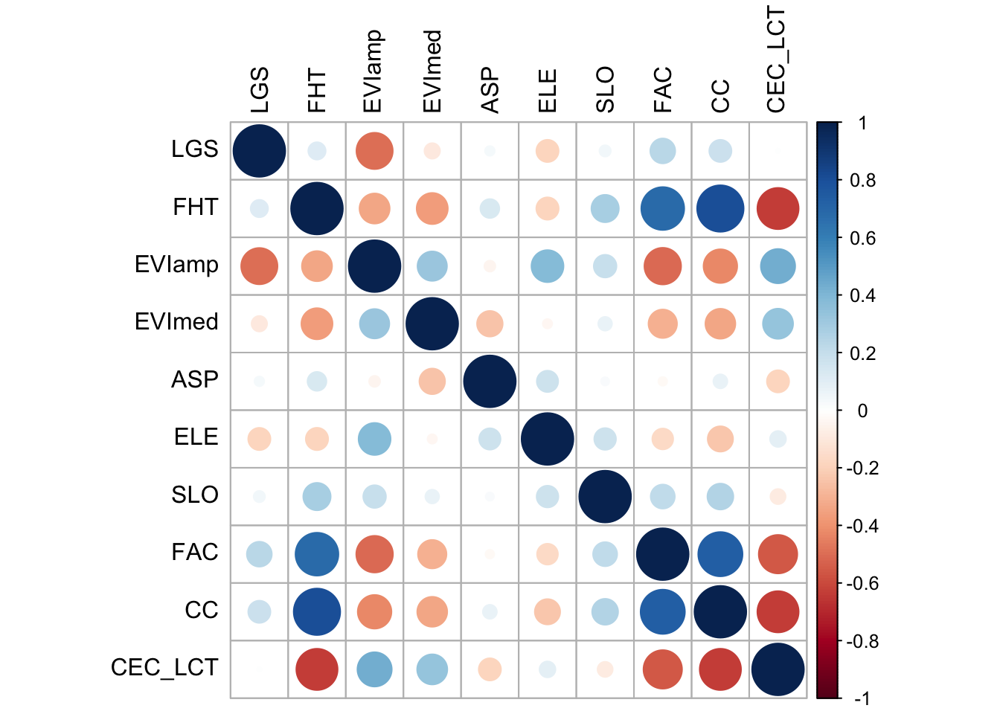
chart_site_both <- chart.Correlation(varCor, histogram=F, pch=19)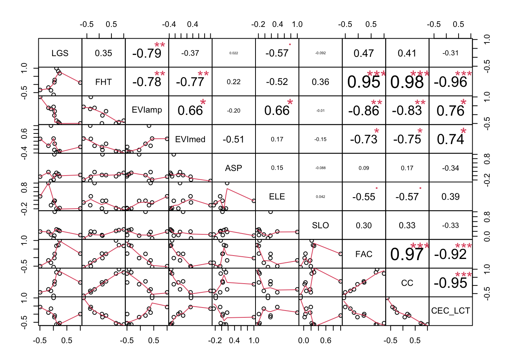
allDistNew <- abs(as.dist(cor(predictors_site_env, use="pairwise.complete.obs")))
allClusNew <- hclust(1 - allDistNew)
plot(allClusNew, hang=-1)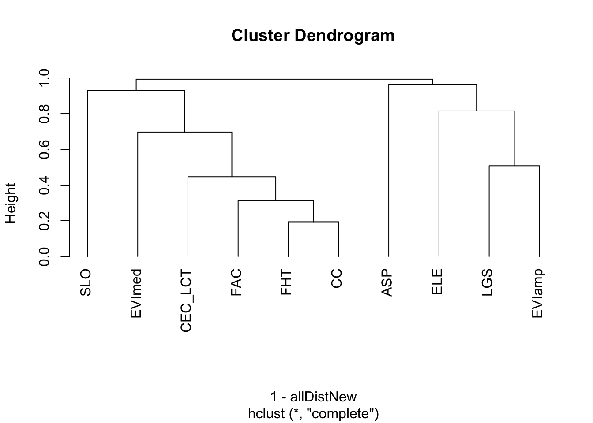
usdm::vif(as.data.frame(predictors_site_env)) Variables VIF
1 LGS 1.414136
2 FHT 3.114275
3 EVIamp 3.091190
4 EVImed 1.425665
5 ASP 1.172286
6 ELE 1.365530
7 SLO 1.374508
8 FAC 2.591816
9 CC 3.389029
10 CEC_LCT 2.924803usdm::vifstep(as.data.frame(predictors_site_env)) ## takes out the highest (sees above 10 as collinearity problem) so that values decreaseNo variable from the 10 input variables has collinearity problem.
The linear correlation coefficients ranges between:
min correlation ( ASP ~ LGS ): -7.937296e-05
max correlation ( CC ~ FHT ): 0.7794918
---------- VIFs of the remained variables --------
Variables VIF
1 LGS 1.414136
2 FHT 3.114275
3 EVIamp 3.091190
4 EVImed 1.425665
5 ASP 1.172286
6 ELE 1.365530
7 SLO 1.374508
8 FAC 2.591816
9 CC 3.389029
10 CEC_LCT 2.924803usdm::vifcor(as.data.frame(predictors_site_env), th=0.8) No variable from the 10 input variables has collinearity problem.
The linear correlation coefficients ranges between:
min correlation ( ASP ~ LGS ): -7.937296e-05
max correlation ( CC ~ FHT ): 0.7794918
---------- VIFs of the remained variables --------
Variables VIF
1 LGS 1.414136
2 FHT 3.114275
3 EVIamp 3.091190
4 EVImed 1.425665
5 ASP 1.172286
6 ELE 1.365530
7 SLO 1.374508
8 FAC 2.591816
9 CC 3.389029
10 CEC_LCT 2.924803chart_site_bothNULL@chart_site_both
at each park
GM only
predictors_site_env_GM <- GM_env_sites[, -c(1:7, 17, 18)]
# correlation structure
varCor_GM <- cor(predictors_site_env_GM, use="pairwise.complete.obs")
corrplot(varCor_GM, tl.col='black')chart.Correlation(varCor_GM, histogram=F, pch=19)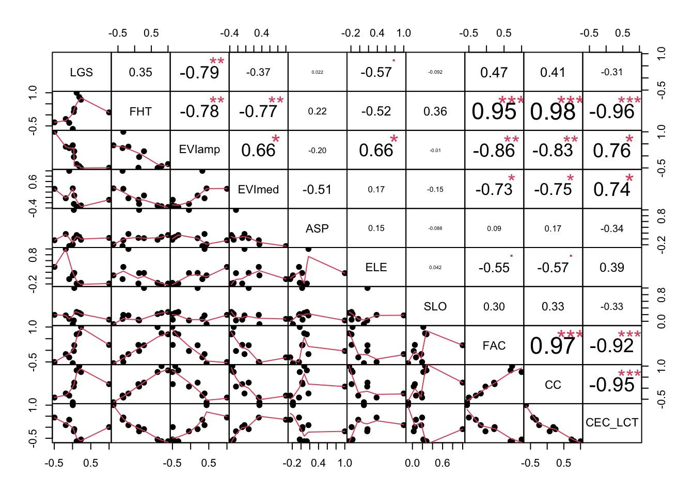
allDistNew_GM <- abs(as.dist(cor(predictors_site_env_GM, use="pairwise.complete.obs")))
allClusNew_GM <- hclust(1 - allDistNew_GM)
plot(allClusNew_GM, hang=-1)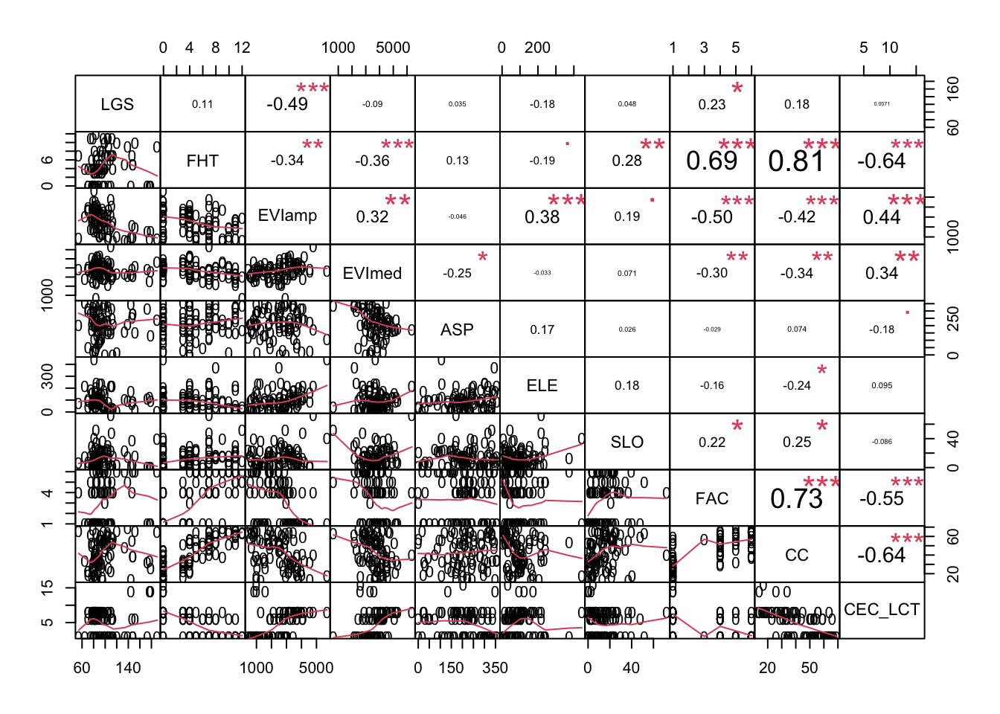
usdm::vif(as.data.frame(predictors_site_env_GM)) Variables VIF
1 LGS 1.439542
2 FHT 3.609961
3 EVIamp 1.994566
4 EVImed 1.377713
5 ASP 1.193996
6 ELE 1.474727
7 SLO 1.608651
8 FAC 2.740356
9 CC 3.601911usdm::vifstep(as.data.frame(predictors_site_env_GM)) ## takes out the highest (sees above 10 as collinearity problem) so that values decreaseNo variable from the 9 input variables has collinearity problem.
The linear correlation coefficients ranges between:
min correlation ( EVImed ~ LGS ): 0.0153209
max correlation ( CC ~ FHT ): 0.7866431
---------- VIFs of the remained variables --------
Variables VIF
1 LGS 1.439542
2 FHT 3.609961
3 EVIamp 1.994566
4 EVImed 1.377713
5 ASP 1.193996
6 ELE 1.474727
7 SLO 1.608651
8 FAC 2.740356
9 CC 3.601911usdm::vifcor(as.data.frame(predictors_site_env_GM), th=0.8) No variable from the 9 input variables has collinearity problem.
The linear correlation coefficients ranges between:
min correlation ( EVImed ~ LGS ): 0.0153209
max correlation ( CC ~ FHT ): 0.7866431
---------- VIFs of the remained variables --------
Variables VIF
1 LGS 1.439542
2 FHT 3.609961
3 EVIamp 1.994566
4 EVImed 1.377713
5 ASP 1.193996
6 ELE 1.474727
7 SLO 1.608651
8 FAC 2.740356
9 CC 3.601911TN only
predictors_site_env_TN <- TN_env_sites[, -c(1:7, 18)]
# correlation structure
varCor_TN <- cor(predictors_site_env_TN, use="pairwise.complete.obs")
corrplot(varCor_TN, tl.col='black')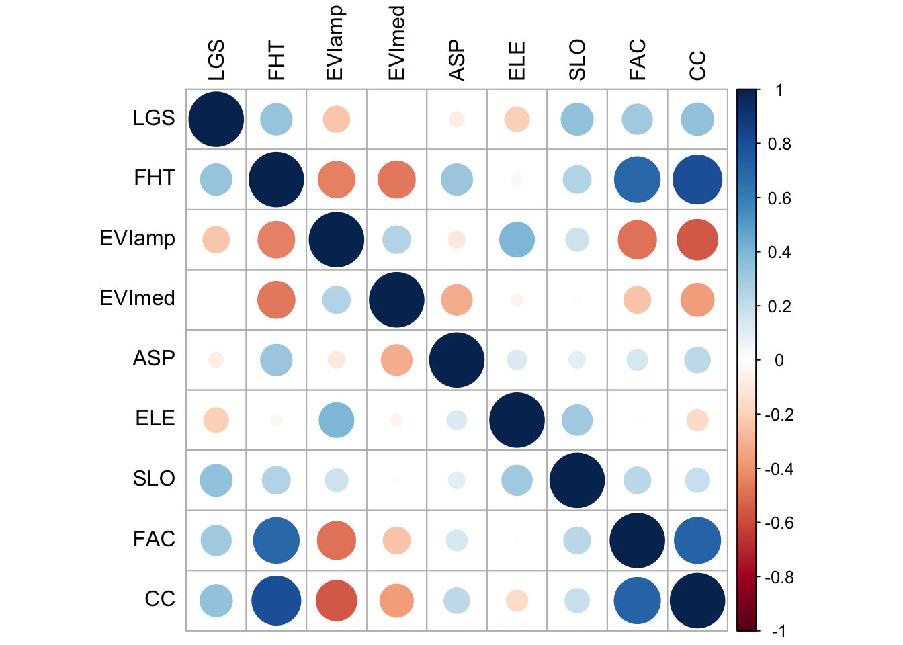
chart.Correlation(varCor_TN, histogram=F, pch=19)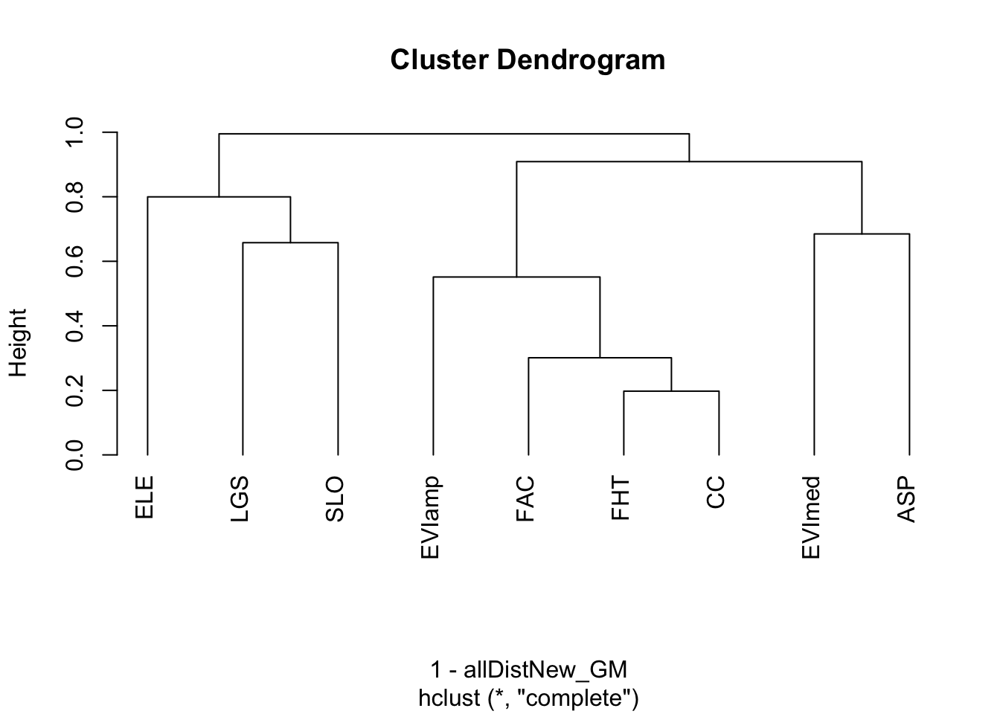
allDistNew_TN <- abs(as.dist(cor(predictors_site_env_TN, use="pairwise.complete.obs")))
allClusNew_TN <- hclust(1 - allDistNew_TN)
plot(allClusNew_TN, hang=-1)usdm::vif(as.data.frame(predictors_site_env_TN)) Variables VIF
1 LGS 1.730613
2 FHT 3.535228
3 EVIamp 4.095956
4 EVImed 2.120230
5 ASP 2.005210
6 ELE 1.672288
7 SLO 1.705397
8 FAC 3.327720
9 CC 3.750058
10 CEC_LCT 4.100072usdm::vifstep(as.data.frame(predictors_site_env_TN)) ## takes out the highest (sees above 10 as collinearity problem) so that values decreaseNo variable from the 10 input variables has collinearity problem.
The linear correlation coefficients ranges between:
min correlation ( CC ~ ASP ): 0.004686678
max correlation ( CC ~ FHT ): 0.7723686
---------- VIFs of the remained variables --------
Variables VIF
1 LGS 1.730613
2 FHT 3.535228
3 EVIamp 4.095956
4 EVImed 2.120230
5 ASP 2.005210
6 ELE 1.672288
7 SLO 1.705397
8 FAC 3.327720
9 CC 3.750058
10 CEC_LCT 4.100072usdm::vifcor(as.data.frame(predictors_site_env_TN), th=0.8) No variable from the 10 input variables has collinearity problem.
The linear correlation coefficients ranges between:
min correlation ( CC ~ ASP ): 0.004686678
max correlation ( CC ~ FHT ): 0.7723686
---------- VIFs of the remained variables --------
Variables VIF
1 LGS 1.730613
2 FHT 3.535228
3 EVIamp 4.095956
4 EVImed 2.120230
5 ASP 2.005210
6 ELE 1.672288
7 SLO 1.705397
8 FAC 3.327720
9 CC 3.750058
10 CEC_LCT 4.100072subplots
both parks
predictors_subplot_env <- env_subplots[, -c(1:8, 10)]
# correlation structure
varCor <- cor(predictors_subplot_env, use="pairwise.complete.obs")
corrplot(varCor, tl.col='black') # dendogram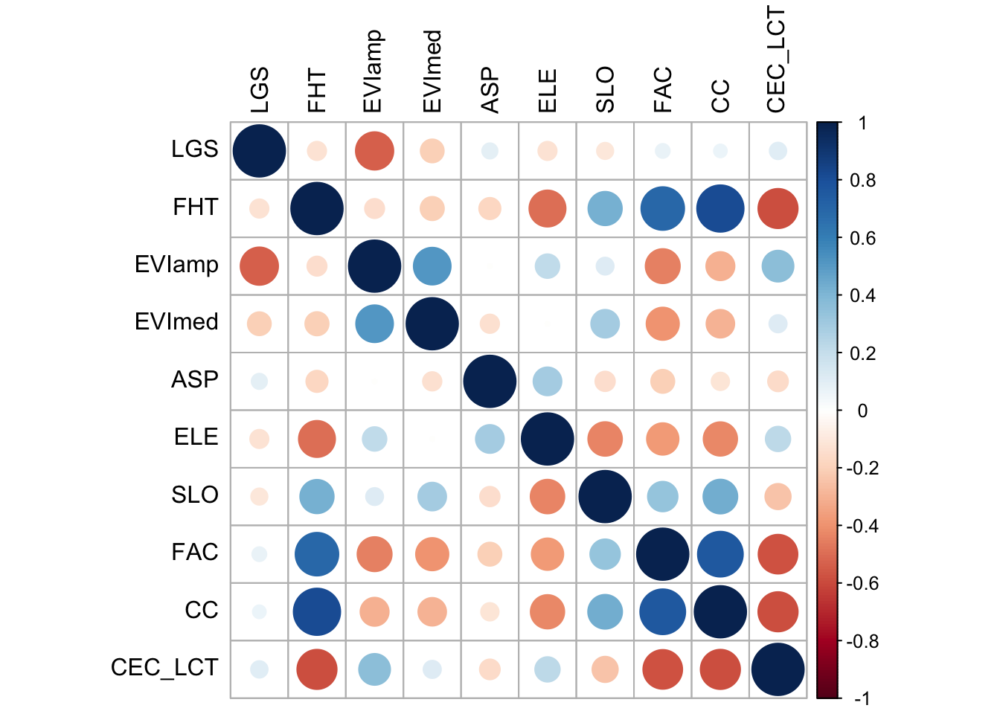
chart.Correlation(varCor, histogram=F, pch=19)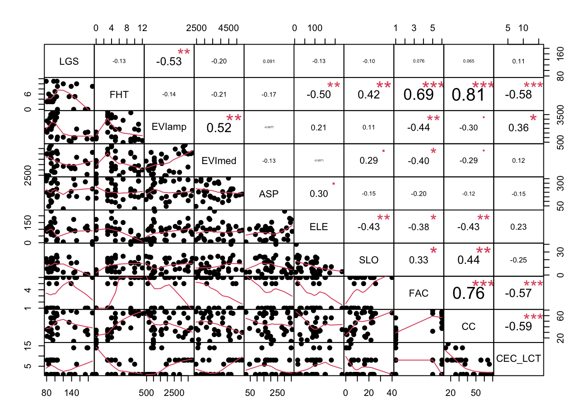
allDistNew <- abs(as.dist(cor(predictors_subplot_env, use="pairwise.complete.obs")))
allClusNew <- hclust(1 - allDistNew)
plot(allClusNew, hang=-1)usdm::vif(as.data.frame(predictors_subplot_env)) Variables VIF
1 CEC_LCT 2.610006
2 FAC 2.736382
3 LGS 1.536785
4 FHT 2.967512
5 SLO 1.394936
6 ELE 1.376378
7 ASP 1.191970
8 EVImed 1.473906
9 EVIamp 2.610045
10 CC 3.503661usdm::vifstep(as.data.frame(predictors_subplot_env)) ## takes out the highest (sees above 10 as collinearity problem) so that values decreaseNo variable from the 10 input variables has collinearity problem.
The linear correlation coefficients ranges between:
min correlation ( EVIamp ~ ASP ): -0.01918157
max correlation ( CC ~ FHT ): 0.7507363
---------- VIFs of the remained variables --------
Variables VIF
1 CEC_LCT 2.610006
2 FAC 2.736382
3 LGS 1.536785
4 FHT 2.967512
5 SLO 1.394936
6 ELE 1.376378
7 ASP 1.191970
8 EVImed 1.473906
9 EVIamp 2.610045
10 CC 3.503661usdm::vifcor(as.data.frame(predictors_subplot_env), th=0.8) No variable from the 10 input variables has collinearity problem.
The linear correlation coefficients ranges between:
min correlation ( EVIamp ~ ASP ): -0.01918157
max correlation ( CC ~ FHT ): 0.7507363
---------- VIFs of the remained variables --------
Variables VIF
1 CEC_LCT 2.610006
2 FAC 2.736382
3 LGS 1.536785
4 FHT 2.967512
5 SLO 1.394936
6 ELE 1.376378
7 ASP 1.191970
8 EVImed 1.473906
9 EVIamp 2.610045
10 CC 3.503661at each park
GM only
predictors_subplot_env_GM <- GM_env_subplots[, -c(1:8, 10)]
# correlation structure
varCor_GM <- cor(predictors_subplot_env_GM, use="pairwise.complete.obs")
corrplot(varCor_GM, tl.col='black')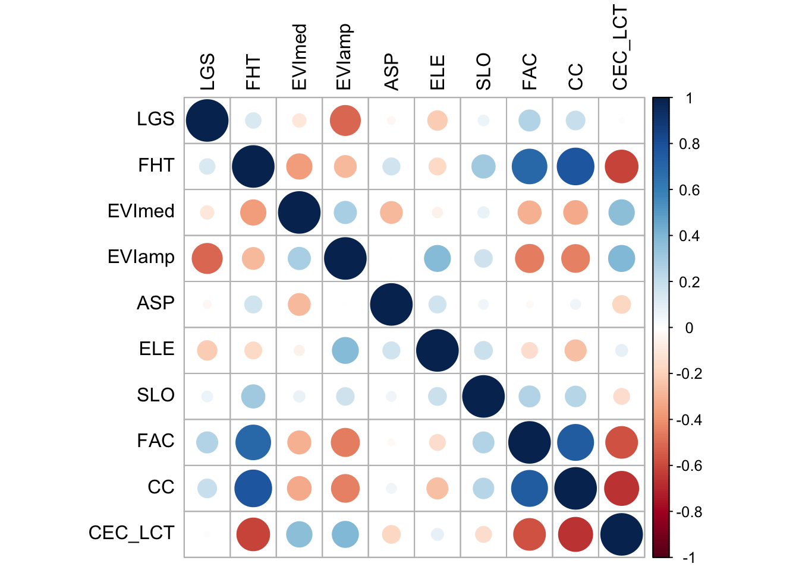
chart.Correlation(varCor_GM, histogram=F, pch=19)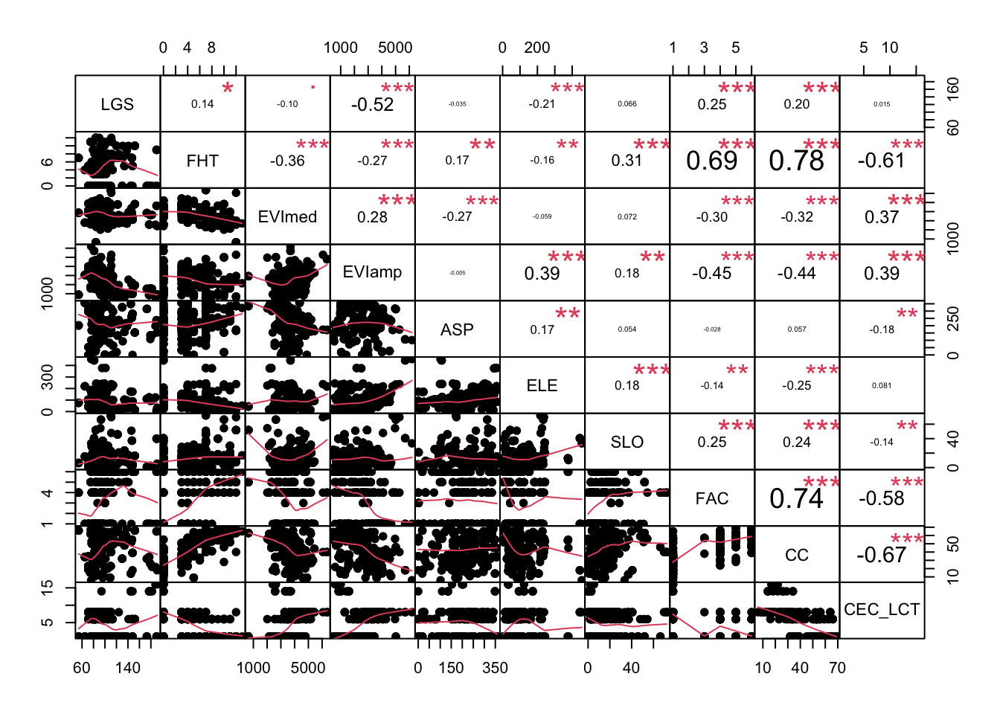
allDistNew_GM <- abs(as.dist(cor(predictors_subplot_env_GM, use="pairwise.complete.obs")))
allClusNew_GM <- hclust(1 - allDistNew_GM)
plot(allClusNew_GM, hang=-1)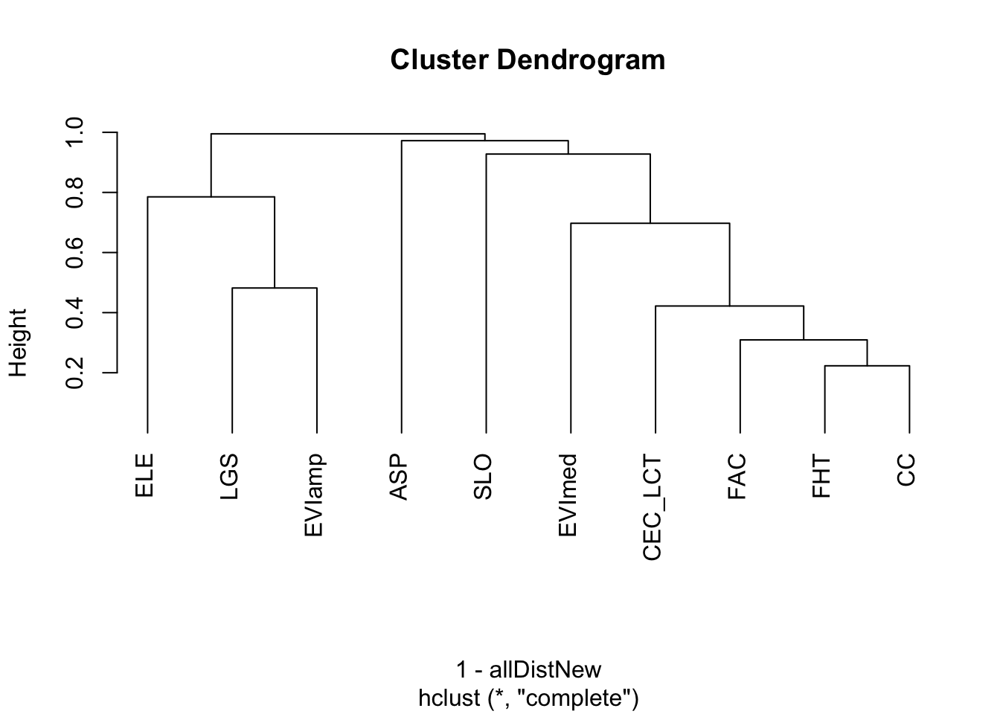
usdm::vif(as.data.frame(predictors_subplot_env_GM)) Variables VIF
1 CEC_LCT 4.137682
2 FAC 2.900317
3 LGS 1.452811
4 FHT 3.931768
5 SLO 1.600963
6 ELE 1.713971
7 ASP 1.230920
8 EVImed 1.837779
9 EVIamp 2.503736
10 CC 4.107154usdm::vifstep(as.data.frame(predictors_subplot_env_GM)) ## takes out the highest (sees above 10 as collinearity problem) so that values decreaseNo variable from the 10 input variables has collinearity problem.
The linear correlation coefficients ranges between:
min correlation ( EVImed ~ ELE ): -0.008275524
max correlation ( CC ~ FHT ): 0.7740574
---------- VIFs of the remained variables --------
Variables VIF
1 CEC_LCT 4.137682
2 FAC 2.900317
3 LGS 1.452811
4 FHT 3.931768
5 SLO 1.600963
6 ELE 1.713971
7 ASP 1.230920
8 EVImed 1.837779
9 EVIamp 2.503736
10 CC 4.107154usdm::vifcor(as.data.frame(predictors_subplot_env_GM), th=0.8) No variable from the 10 input variables has collinearity problem.
The linear correlation coefficients ranges between:
min correlation ( EVImed ~ ELE ): -0.008275524
max correlation ( CC ~ FHT ): 0.7740574
---------- VIFs of the remained variables --------
Variables VIF
1 CEC_LCT 4.137682
2 FAC 2.900317
3 LGS 1.452811
4 FHT 3.931768
5 SLO 1.600963
6 ELE 1.713971
7 ASP 1.230920
8 EVImed 1.837779
9 EVIamp 2.503736
10 CC 4.107154TN only
predictors_subplot_env_TN <- TN_env_subplots[, -c(1:8, 10)]
# correlation structure
varCor_TN <- cor(predictors_subplot_env_TN, use="pairwise.complete.obs")
corrplot(varCor_TN, tl.col='black')
chart.Correlation(varCor_TN, histogram=F, pch=19)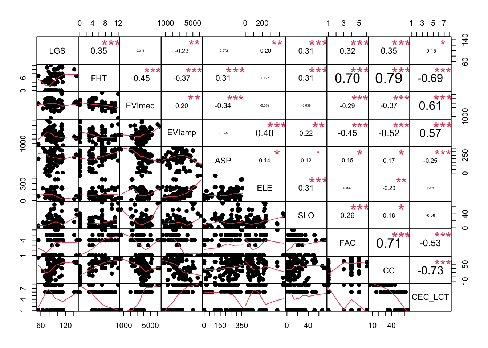
allDistNew_TN <- abs(as.dist(cor(predictors_subplot_env_TN, use="pairwise.complete.obs")))
allClusNew_TN <- hclust(1 - allDistNew_TN)
plot(allClusNew_TN, hang=-1)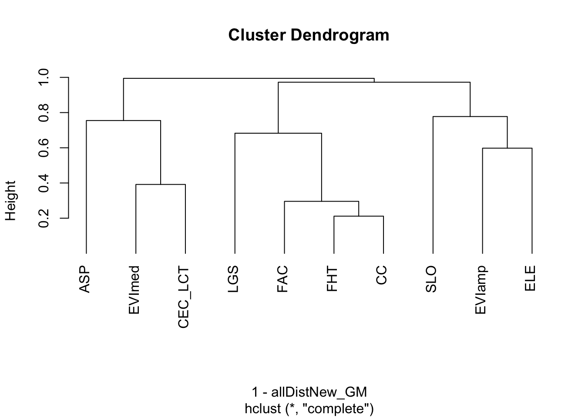
usdm::vif(as.data.frame(predictors_subplot_env_TN)) Variables VIF
1 CEC_LCT 2.925434
2 FAC 3.689765
3 LGS 1.933453
4 FHT 3.191051
5 SLO 1.818067
6 ELE 1.668496
7 ASP 1.475844
8 EVImed 2.280917
9 EVIamp 3.299607
10 CC 3.589541usdm::vifstep(as.data.frame(predictors_subplot_env_TN)) ## takes out the highest (sees above 10 as collinearity problem) so that values decreaseNo variable from the 10 input variables has collinearity problem.
The linear correlation coefficients ranges between:
min correlation ( EVIamp ~ ASP ): -0.00581118
max correlation ( CC ~ FAC ): 0.7527654
---------- VIFs of the remained variables --------
Variables VIF
1 CEC_LCT 2.925434
2 FAC 3.689765
3 LGS 1.933453
4 FHT 3.191051
5 SLO 1.818067
6 ELE 1.668496
7 ASP 1.475844
8 EVImed 2.280917
9 EVIamp 3.299607
10 CC 3.589541usdm::vifcor(as.data.frame(predictors_subplot_env_TN), th=0.8) No variable from the 10 input variables has collinearity problem.
The linear correlation coefficients ranges between:
min correlation ( EVIamp ~ ASP ): -0.00581118
max correlation ( CC ~ FAC ): 0.7527654
---------- VIFs of the remained variables --------
Variables VIF
1 CEC_LCT 2.925434
2 FAC 3.689765
3 LGS 1.933453
4 FHT 3.191051
5 SLO 1.818067
6 ELE 1.668496
7 ASP 1.475844
8 EVImed 2.280917
9 EVIamp 3.299607
10 CC 3.589541rasters
both pakrs
TN_env_raster_df <- as.data.frame(TN_env_raster, xy = TRUE)
for ( col in 1:ncol(TN_env_raster_df)){
colnames(TN_env_raster_df)[col] <- sub("_TN*", "", colnames(TN_env_raster_df)[col])
}
GM_env_raster_df <- as.data.frame(GM_env_raster, xy = TRUE)
for ( col in 1:ncol(GM_env_raster_df)){
colnames(GM_env_raster_df)[col] <- sub("_GM*", "", colnames(GM_env_raster_df)[col])
}
GM_env_raster_df <- GM_env_raster_df %>%
rename(CC = "CC15fill")
TN_env_raster_df <- TN_env_raster_df %>%
rename(CC = "CC10fill")
NL_env_raster_df <- dplyr::bind_rows(GM_env_raster_df, TN_env_raster_df)
predictors_park_env_NL <- NL_env_raster_df[, -c(1:2)]
# correlation structure
varCor_NL <- cor(predictors_park_env_NL, use="pairwise.complete.obs")
corrplot(varCor_NL, tl.col='black')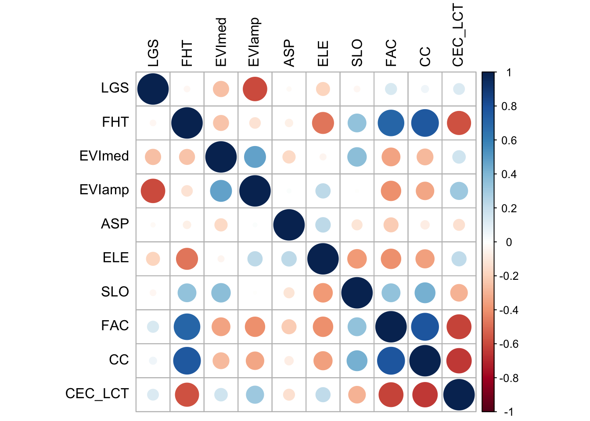
chart.Correlation(varCor_NL, histogram=F, pch=19)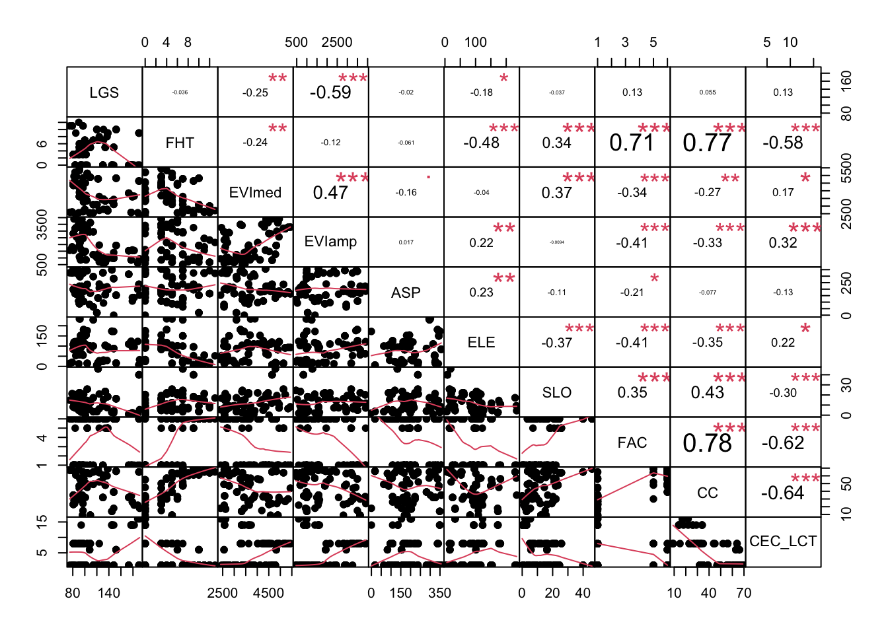
allDistNew_NL <- abs(as.dist(cor(predictors_park_env_NL, use="pairwise.complete.obs")))
allClusNew_NL <- hclust(1 - allDistNew_NL)
plot(allClusNew_NL, hang=-1)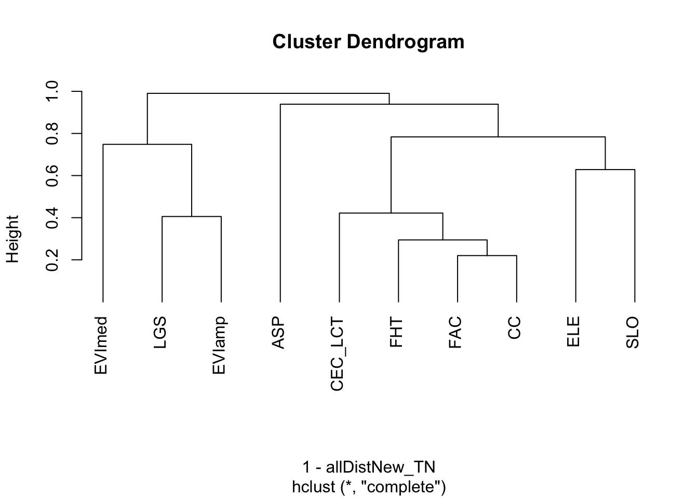
usdm::vif(as.data.frame(predictors_park_env_NL)) Variables VIF
1 SPC 3.920948
2 FAC 3.994242
3 EVIamp 1.239478
4 EVImed 1.086383
5 FHT 1.989386
6 CC 2.713185
7 SLO 1.245902
8 ELE 1.557518
9 ASP 1.027718
10 LCT 1.997539usdm::vifstep(as.data.frame(predictors_park_env_NL)) ## takes out the highest (sees above 10 as collinearity problem) so that values decreaseNo variable from the 10 input variables has collinearity problem.
The linear correlation coefficients ranges between:
min correlation ( FHT ~ EVImed ): -0.001110237
max correlation ( FAC ~ SPC ): 0.8371329
---------- VIFs of the remained variables --------
Variables VIF
1 SPC 3.855935
2 FAC 3.894501
3 EVIamp 1.236847
4 EVImed 1.090744
5 FHT 2.407770
6 CC 2.730444
7 SLO 1.262400
8 ELE 1.532155
9 ASP 1.031181
10 LCT 1.953610usdm::vifcor(as.data.frame(predictors_park_env_NL), th=0.8) 1 variables from the 10 input variables have collinearity problem:
FAC
After excluding the collinear variables, the linear correlation coefficients ranges between:
min correlation ( EVImed ~ SPC ): 0.005551961
max correlation ( CC ~ FHT ): 0.6936679
---------- VIFs of the remained variables --------
Variables VIF
1 SPC 1.583880
2 EVIamp 1.187633
3 EVImed 1.054938
4 FHT 2.312961
5 CC 2.628091
6 SLO 1.222388
7 ELE 1.547142
8 ASP 1.040660
9 LCT 1.902312at each park
GM only
predictors_park_env_GM <- GM_env_raster_df[, -c(1:2)]
# correlation structure
varCor_GM <- cor(predictors_park_env_GM, use="pairwise.complete.obs")
corrplot(varCor_GM, tl.col='black')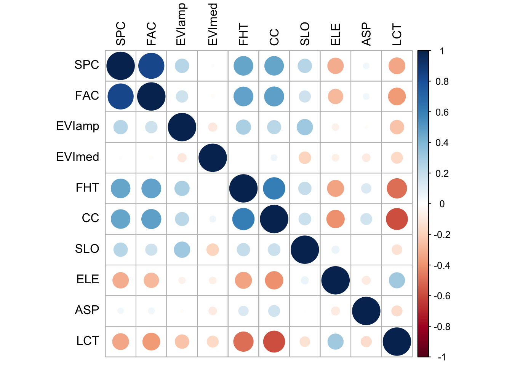
chart.Correlation(varCor_GM, histogram=F, pch=19)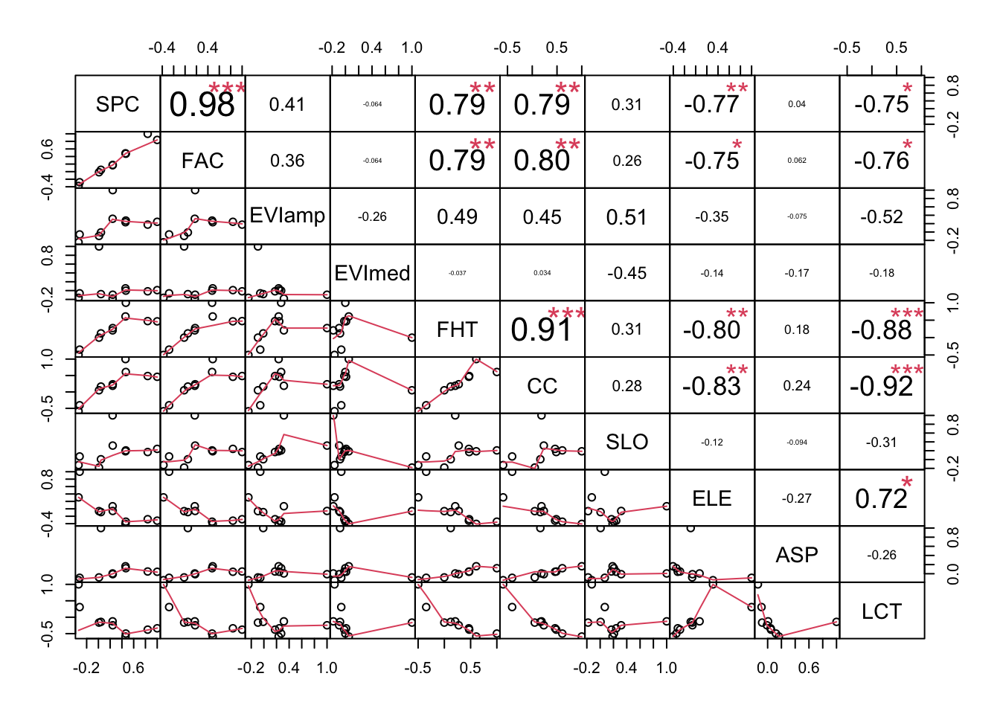
allDistNew_GM <- abs(as.dist(cor(predictors_park_env_GM, use="pairwise.complete.obs")))
allClusNew_GM <- hclust(1 - allDistNew_GM)
plot(allClusNew_GM, hang=-1)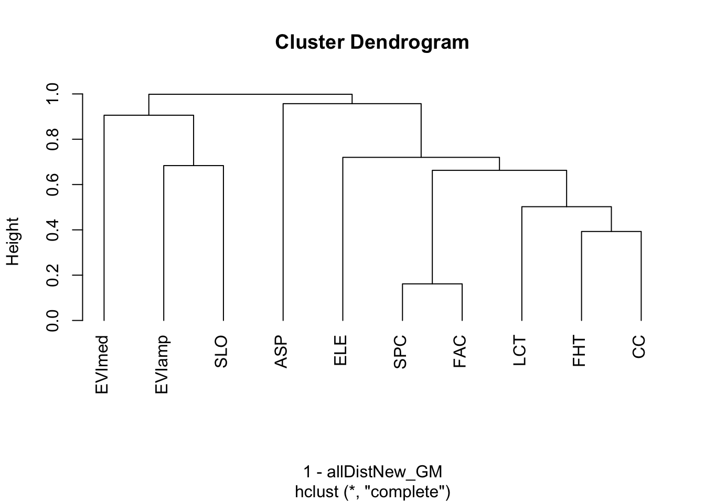
usdm::vif(as.data.frame(predictors_park_env_GM)) Variables VIF
1 SPC 3.746685
2 FAC 3.661352
3 EVIamp 1.218609
4 EVImed 1.114391
5 FHT 1.931842
6 CC 2.249696
7 SLO 1.253441
8 ELE 1.349116
9 ASP 1.052377
10 LCT 1.857273usdm::vifstep(as.data.frame(predictors_park_env_GM)) ## takes out the highest (sees above 10 as collinearity problem) so that values decreaseNo variable from the 10 input variables has collinearity problem.
The linear correlation coefficients ranges between:
min correlation ( ASP ~ SLO ): 0.005243636
max correlation ( FAC ~ SPC ): 0.8411152
---------- VIFs of the remained variables --------
Variables VIF
1 SPC 3.804609
2 FAC 3.775427
3 EVIamp 1.211889
4 EVImed 1.112741
5 FHT 2.323803
6 CC 2.225136
7 SLO 1.235181
8 ELE 1.346572
9 ASP 1.066513
10 LCT 1.773859usdm::vifcor(as.data.frame(predictors_park_env_GM), th=0.8) 1 variables from the 10 input variables have collinearity problem:
SPC
After excluding the collinear variables, the linear correlation coefficients ranges between:
min correlation ( EVImed ~ FAC ): 0.005410856
max correlation ( CC ~ FHT ): 0.6830076
---------- VIFs of the remained variables --------
Variables VIF
1 FAC 1.459278
2 EVIamp 1.205385
3 EVImed 1.106221
4 FHT 2.419918
5 CC 2.326893
6 SLO 1.202926
7 ELE 1.351943
8 ASP 1.060523
9 LCT 1.790068TN only
predictors_park_env_TN <- TN_env_raster_df[, -c(1:2)]
# correlation structure
varCor_TN <- cor(predictors_park_env_TN, use="pairwise.complete.obs")
corrplot(varCor_TN, tl.col='black')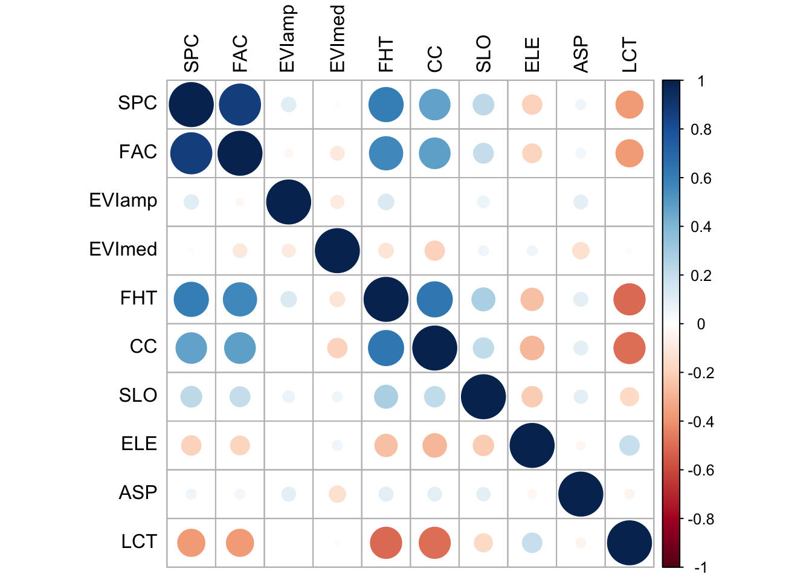
chart.Correlation(varCor_TN, histogram=F, pch=19)
allDistNew_TN <- abs(as.dist(cor(predictors_park_env_TN, use="pairwise.complete.obs")))
allClusNew_TN <- hclust(1 - allDistNew_TN)
plot(allClusNew_TN, hang=-1)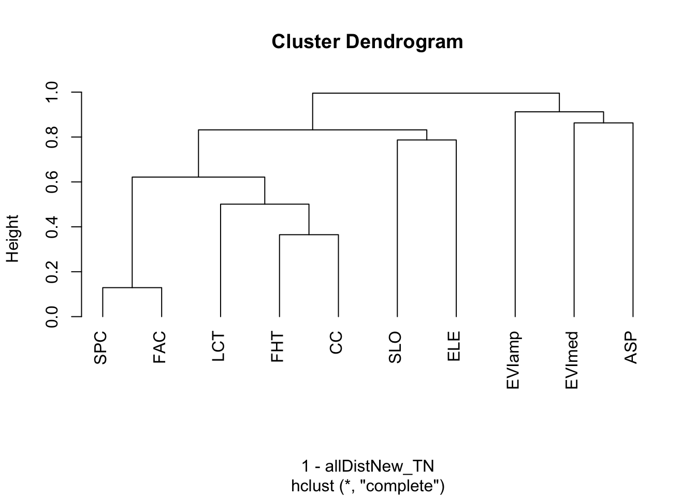
usdm::vif(as.data.frame(predictors_park_env_TN)) Variables VIF
1 SPC 4.361313
2 FAC 4.165260
3 EVIamp 1.165685
4 EVImed 1.134906
5 FHT 2.382444
6 CC 2.268423
7 SLO 1.140864
8 ELE 1.126974
9 ASP 1.040646
10 LCT 1.587698usdm::vifstep(as.data.frame(predictors_park_env_TN)) ## takes out the highest (sees above 10 as collinearity problem) so that values decreaseNo variable from the 10 input variables has collinearity problem.
The linear correlation coefficients ranges between:
min correlation ( ELE ~ EVIamp ): 0.003485858
max correlation ( FAC ~ SPC ): 0.8529217
---------- VIFs of the remained variables --------
Variables VIF
1 SPC 4.399106
2 FAC 4.249580
3 EVIamp 1.171711
4 EVImed 1.163687
5 FHT 2.573199
6 CC 2.698594
7 SLO 1.125800
8 ELE 1.121561
9 ASP 1.050601
10 LCT 1.620356usdm::vifcor(as.data.frame(predictors_park_env_TN), th=0.8) 1 variables from the 10 input variables have collinearity problem:
SPC
After excluding the collinear variables, the linear correlation coefficients ranges between:
min correlation ( CC ~ EVIamp ): -0.007539007
max correlation ( CC ~ FHT ): 0.6695843
---------- VIFs of the remained variables --------
Variables VIF
1 FAC 1.599538
2 EVIamp 1.063542
3 EVImed 1.080924
4 FHT 2.291171
5 CC 2.248144
6 SLO 1.120140
7 ELE 1.123302
8 ASP 1.039835
9 LCT 1.497881